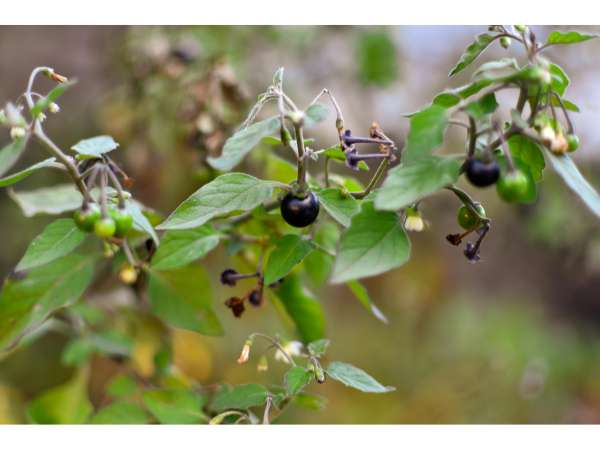

Solanum nigrum
Common Names: Black Nightshade, Garden Nightshade, Wonder Berry
Local Name: Manathakkali Keerai (Tamil), Makoi (Hindi), Kamanchi (Telugu)
Family: Solanaceae
Origin: Eurasia; naturalized worldwide
Plant Type: Annual or short-lived perennial herb
Average Lifespan: Annual; self-seeds prolifically
| Growth Habit | Erect to spreading branching herb |
| Plant Size | 30–90 cm tall |
| Leaves | Ovate, 3–8 cm long, slightly wavy margins, dark green; tender young leaves used as vegetable |
| Flowers | Small, white, star-shaped with yellow anthers; borne in drooping clusters |
| Fruit | Small round berries, 5–8 mm diameter; green when unripe, turning glossy black when ripe |
| Root System | Shallow fibrous taproot |
| Climate | Tropical to temperate; highly adaptable weed-like growth |
| Temperature Range | 15–35°C; tolerates a wide range |
| Rainfall Requirement | 600–1500 mm; drought-tolerant once established |
| Soil Type | Grows in most soils; prefers fertile, well-drained loam |
| Soil pH Preference | 5.5–7.5 |
| Sun Requirement | Full sun to partial shade |
| Spacing | 20–30 cm between plants |
| Irrigation Method | Minimal; tolerates irregular watering |
| Water Requirement | Low to moderate; drought-tolerant |
| Can it Grow in Pots? | Yes, in medium containers |
| Fertilizer Schedule | Minimal; compost at planting is sufficient |
| Recommended Organic Fertilizers | Compost, vermicompost; avoid excess nitrogen |
| Pruning Time | Harvest young leaves and tender shoots regularly |
| How to Prune | Pinch growing tips to encourage bushy growth; harvest before flowering for best leaf quality |
| Common Pests | Aphids, whiteflies, leaf miners; generally very hardy |
| Common Diseases | Leaf blight in waterlogged conditions; generally disease-resistant |
| Disease Prevention & Remedies | Good drainage; avoid overwatering |
| Propagation by Seeds | Seeds germinate readily in 1–2 weeks; self-seeds prolifically |
| Propagation by Cuttings | Stem cuttings root easily in moist soil |
| Water Usage | Very low; one of the most drought-tolerant greens |
| Biodiversity Benefits | Berries eaten by birds; flowers attract small pollinators |
| Commercial Production Regions | Tamil Nadu, Andhra Pradesh, Karnataka, Maharashtra; widely across South and Southeast Asia |
| Market Uses | Fresh leaves for cooking, dried berries for traditional medicine |
| Market Value (Approx.) | ₹15–40 per bunch in local markets |
| Symbolism | Known as "Manathakkali" in Tamil — a staple green in traditional Tamil cuisine and Siddha medicine |
| Traditional Uses | Leaves cooked as keerai (greens); berries used in Siddha medicine for mouth ulcers and stomach ailments; berries made into pickle (manathakkali vathal) |
| Calories | ~35 kcal per 100g |
| Dietary Fiber | 2.8 g per 100g |
| Vitamin C | Good source; supports immunity |
| Vitamin A | High; important for eye and skin health |
| Iron | Good source; beneficial for blood health |
| Other Key Nutrients | Calcium, alkaloids (solanine in unripe berries — cook leaves thoroughly) |
| Digestive Health | Traditionally used for mouth ulcers, gastric ulcers, and liver disorders |
| Anti-inflammatory Properties | Alkaloids show anti-inflammatory activity; used for skin inflammation |
| Immune Support | Antioxidant-rich; used in Siddha formulations for fever and infections |
Disclaimer: Information provided is for educational purposes only and not a substitute for medical advice.
Add your field observations here.